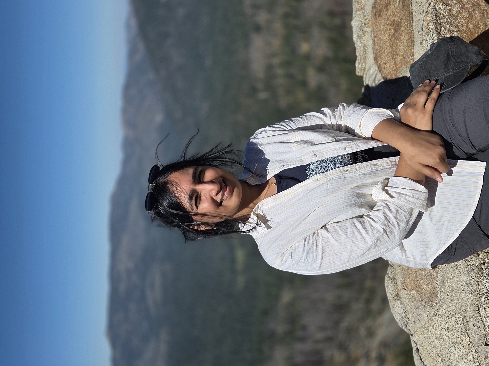

Postdoc · UChicago
Pallavi Surana
Bioinformatics · Genomics · AI for precision medicine
About
I am a Postdoc researcher at UChicago in the Madduri group at ANL, collaborating with the Odunsi group. My research explores the human genome in complex disorders and builds tools along the way.
My PhD focused on the role of tissue-specific transcript variants in health and cancer, leveraging large language models (LLMs) to decode the regulatory logic of tissue specificity. My work bridges bioinformatics, genomics, and AI to address critical challenges in precision medicine.
Research
- Bio-AI for Cancer Research: Developing interpretable AI approaches, including biological foundation models, for cancer genomics, biomarker discovery, disease risk prediction, and therapeutic target identification. Using agentic approaches to make findings easier to discover and use.
- Computational Biology & Statistical Genomics: Understanding tissue-specific interactions across species and their dysregulation in cancer, with a focus on the non-coding genome.
Recent News
- Oct 2026Received BSD Career Advancement for Postdocs (CAP) Travel Award: Conference travel support for Supercomputing 2026 to present a poster on agentic approaches in cancer at the CAFCW Workshop.
- Sep 2026Frames of Research: The UChicago Postdoc Research Showcase (National Postdoc Appreciation Week 2026) [Poster or Website]
- Sep 2026Received BSD Small values grant: Conference support ASHG 2026 to present a poster on drug targets for splice site affecting mutations.
- Jul 2026Highlighted as UCCCC TAM Member of the Month of July.
- Jul 2026Presenting variant-to-drug-target work as a lightning talk at NCI-ITCR 2026, CSHL.
- Jul 2026Personal genome risk-score talk at ISMB 2026, Washington DC.
- Jun 2026Received Professional Development Travel Grant as a Trainee Associate Member at UChicago Cancer Center (to attend ISMB 2026).
- Jun 2026TSProm is published in NAR Genomics and Bioinformatics.
- Jun 2026Trainee Associate Member(TAM) at UChicago Cancer Center.
- Mar 2026Started my Postdoc at UChicago.
- Jan 2026Defended my PhD thesis: “Unraveling the tissue-specific landscape using AI.”

Talks & Highlights
Bio
Outside the lab I enjoy hiking, kayaking, and nature retreats. I am a Hindustani Classical student under Smt. Tapashi Banerjee, and I paint.